Colorizing the Prokudin-Gorskii Photo Collection
Between 1909 and 1915, Sergei Prokudin-Gorskii photographed the Russian Empire in color — decades before color film existed — by recording three black-and-white exposures of every scene through red, green, and blue filters. Digitized glass plates from that collection arrive as one tall grayscale strip of three stacked exposures; this project automatically finds the alignment that recombines them into a single color photo.
Three exposures, one camera, no color film
Prokudin-Gorskii (1863–1944) built a camera that took the same scene three times through red, green, and blue filters onto a single glass plate, then projected all three back through matching filters to reconstruct color — a trick that worked in a lecture hall but obviously doesn't survive being scanned as a flat image.
The Library of Congress digitized the surviving plates as single grayscale strips: the blue exposure on top, green in the middle, red on the bottom, each occupying roughly the same frame but shifted by a few to a few hundred pixels from the last, since the camera moved slightly between exposures. Recombining them is a search problem: split the strip into thirds, then find the (x, y) shift that best lines up G and R against B. Because the camera didn't rotate or change distance between exposures, a simple translation is enough — no need to search over rotation or scale.
Exhaustive search, then a pyramid to make it fast
Split each scan into equal B, G, R thirds, crop in from the edges so border artifacts don't pollute the score, then search for the displacement that makes each channel match B best.

Two scoring metrics decide how well a candidate shift lines up two channels:
- L2 / Euclidean distance —
sqrt(sum((image1 - image2)^2)), minimized at the best alignment. - Normalized Cross-Correlation (NCC) — the dot product of each image mean-subtracted and normalized to unit length, maximized at the best alignment.
Single-scale: brute force
For the small JPEGs, an exhaustive search is cheap: try every displacement in a window of candidate (x, y) shifts, score each one against the reference channel, and keep the best. This is the whole algorithm for Part 1 — no pyramid involved.
Multi-scale: coarse-to-fine pyramid
The full-resolution .tif scans are thousands of pixels
tall with true displacements well beyond what a small search window can
reach, and searching a wide window at full resolution is far too slow.
Instead, the pyramid downsamples both channels by powers of two,
aligns at the coarsest (smallest, cheapest) level first with a wide
search window, then walks back up: at each finer level it doubles the
previous level's shift as a starting guess, applies it, and searches
only a small residual window to refine it. Each level's correction
accumulates into the final total shift. The recursion, downsampling,
and shifting are all implemented directly — only generic
utilities (cv2.resize for downsampling, np.roll
for shifting) are used, no built-in pyramid or auto-alignment routines.
Single-Scale Results
Exhaustive L2 search on the three provided low-resolution JPEGs.
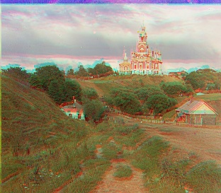

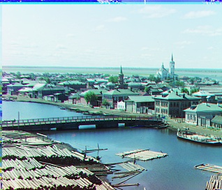
Multi-Scale Pyramid Results
The same three JPEGs plus all 11 full-resolution TIFFs, run through the coarse-to-fine pyramid instead of direct search — a check that the pyramid reproduces Part 1's results on the JPEGs, and the only way the thousands-of-pixels-tall TIFFs finish at all. All 14 images together took 116.5s (about 8s/image on average), well inside the one-minute-per-image target.
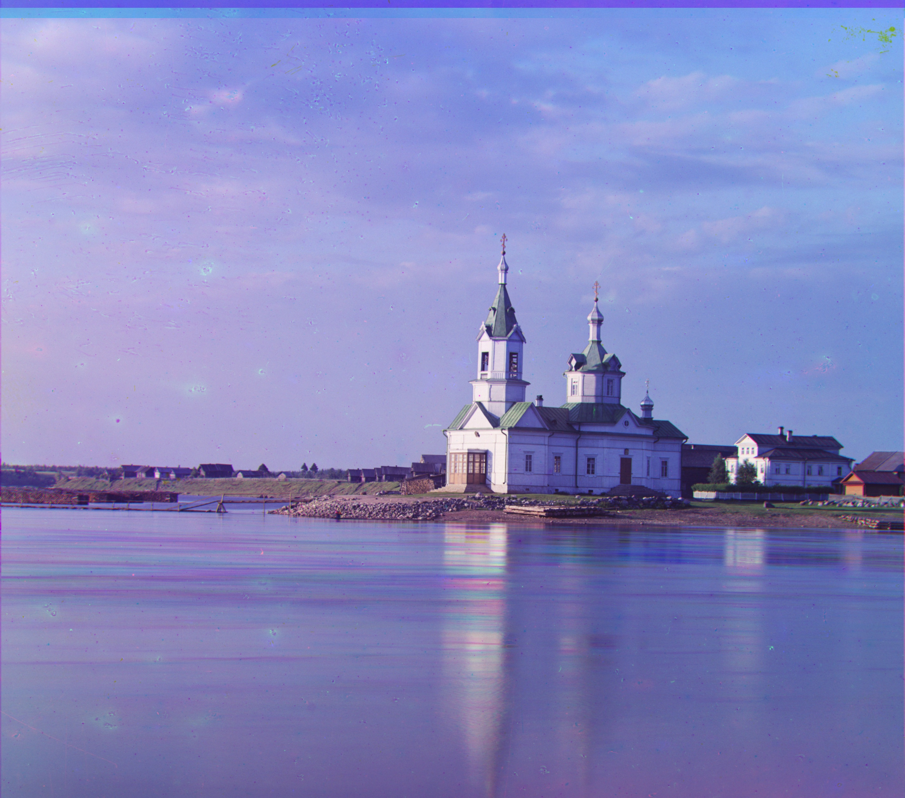
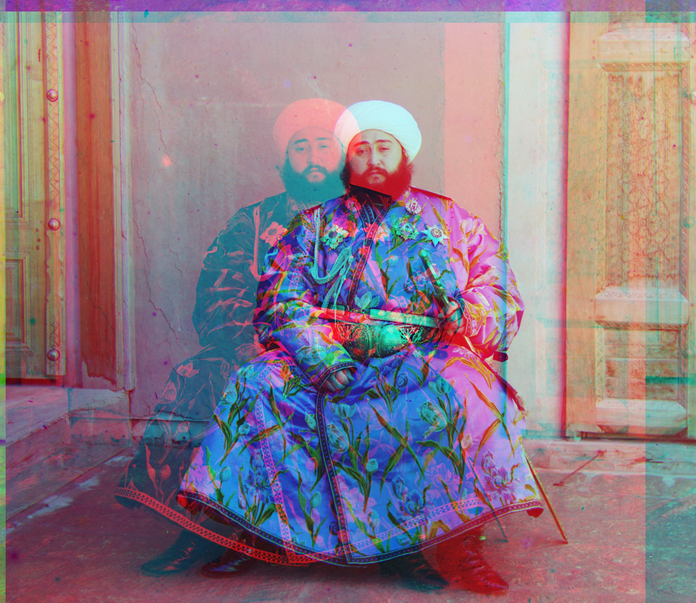
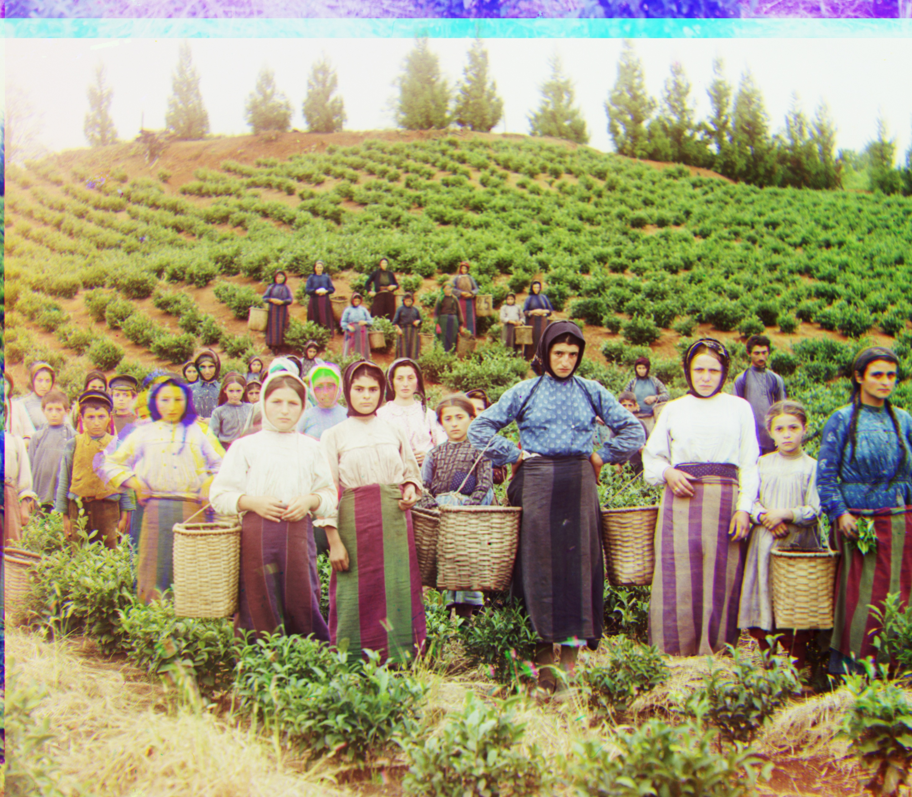
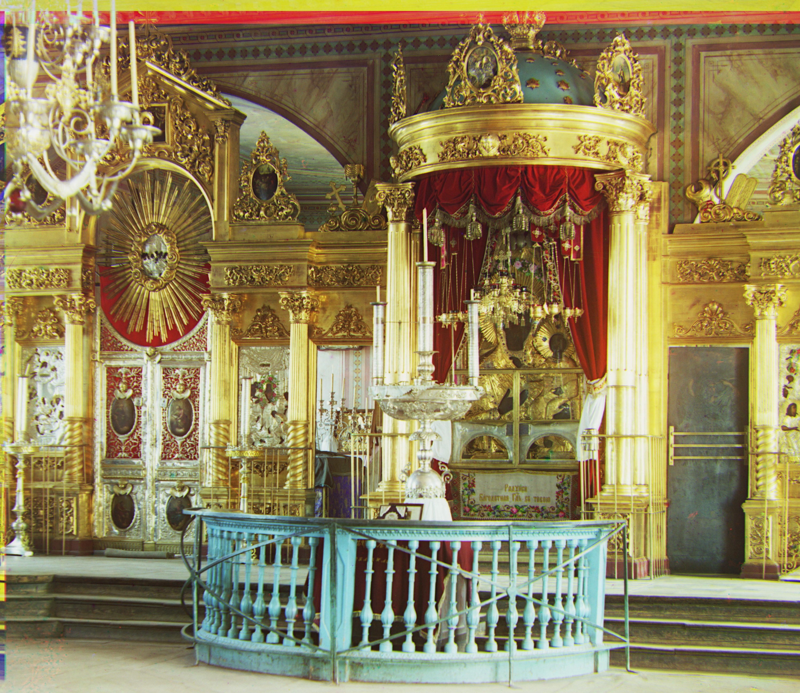
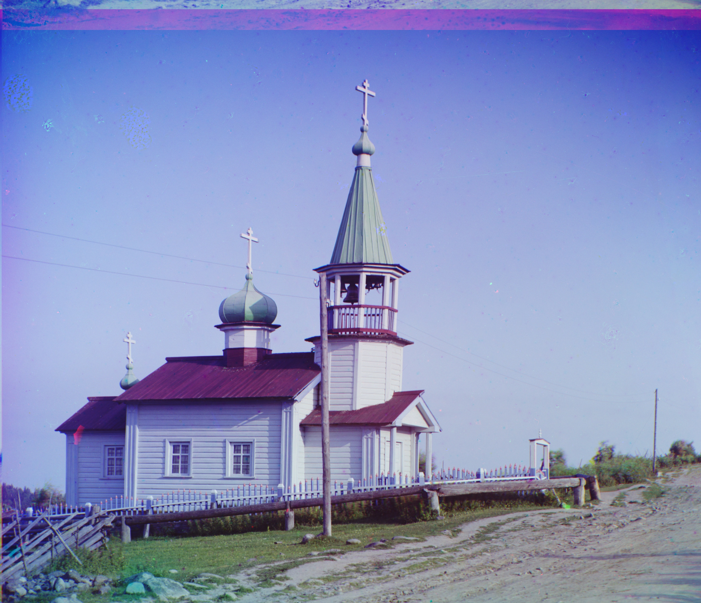
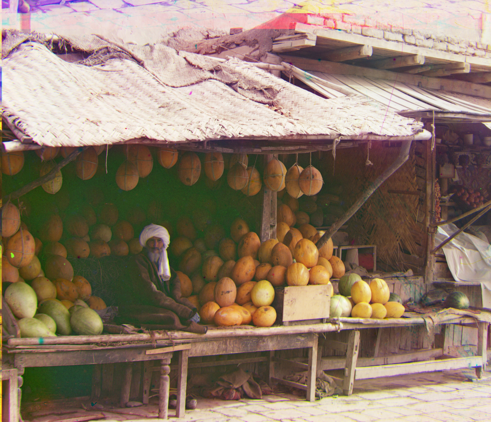
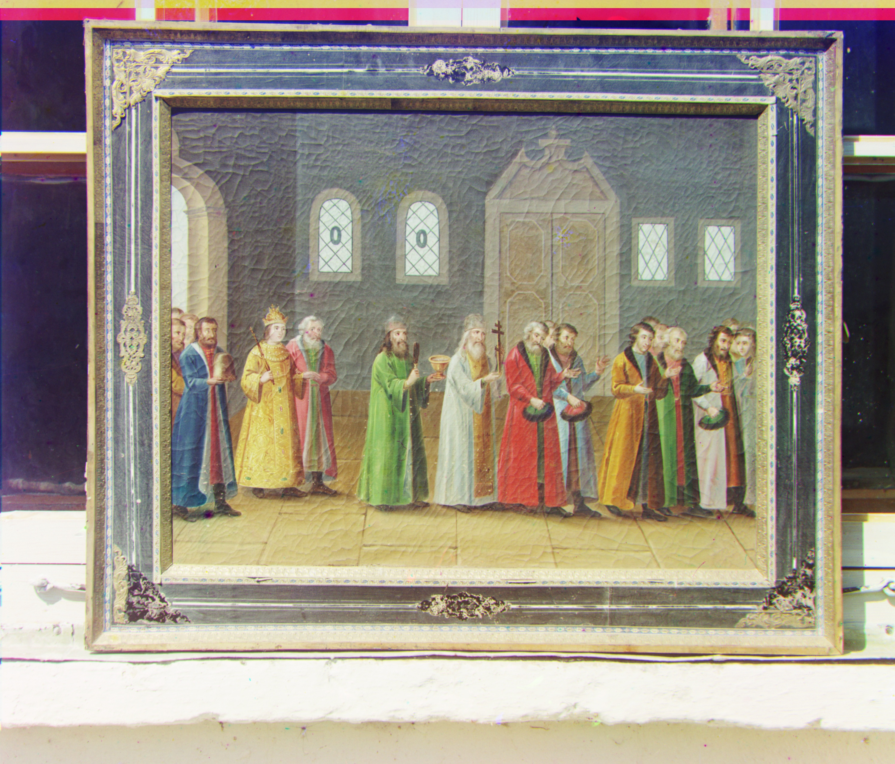
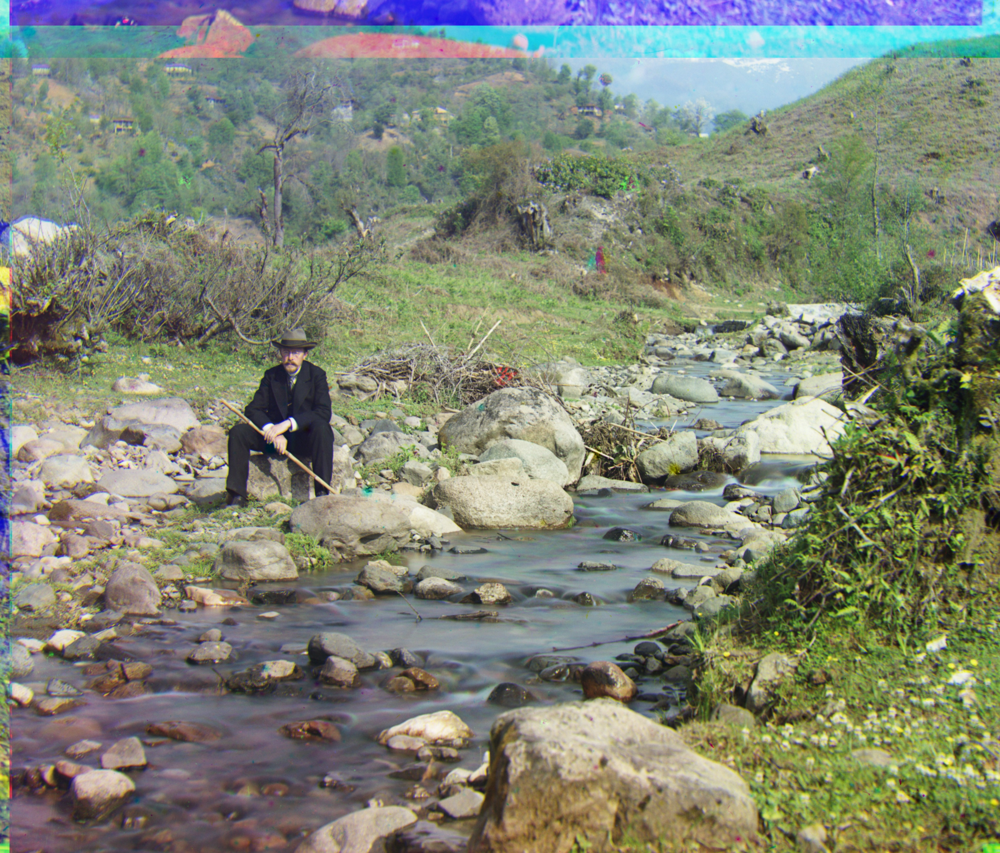
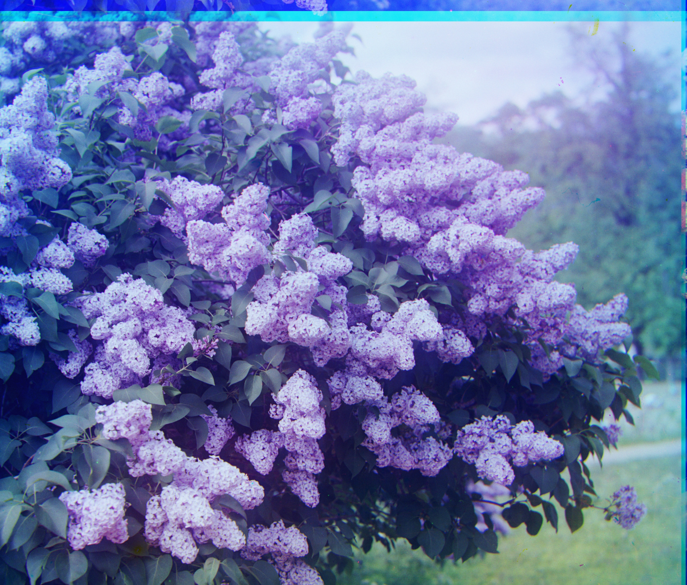
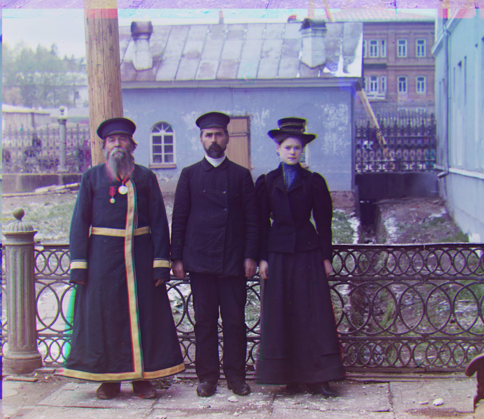
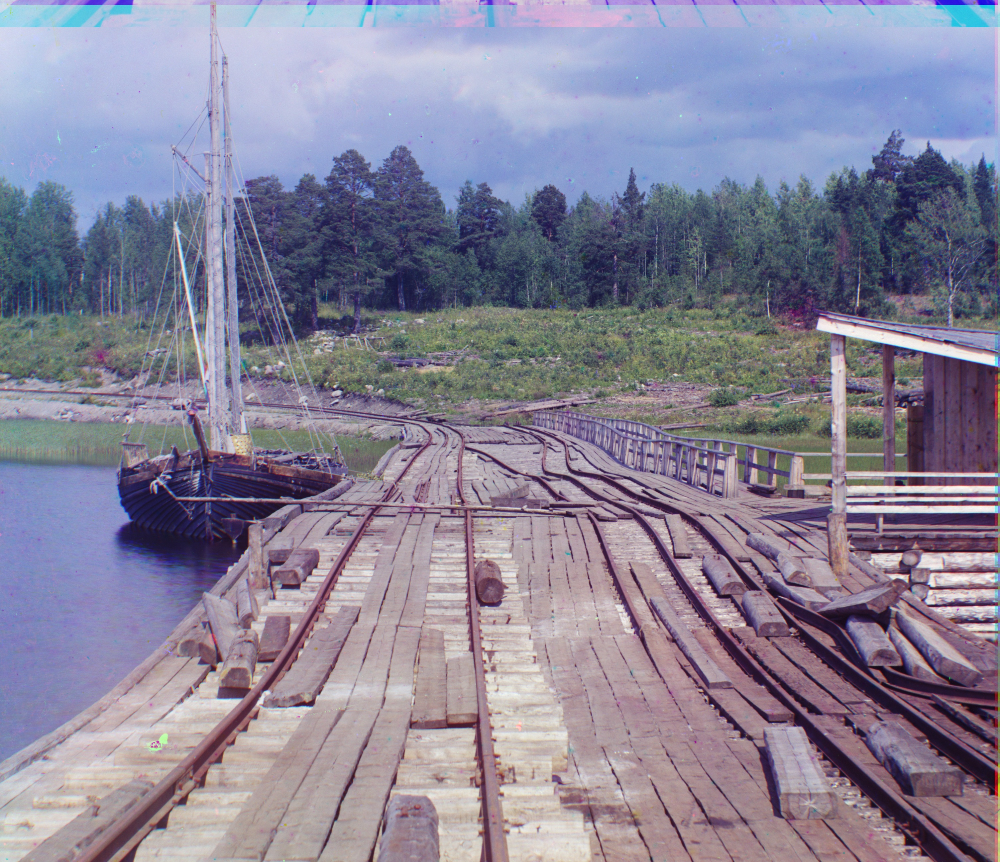
Custom Images
Three more Prokudin-Gorskii plates run through the same multi-scale pipeline, unseen by any tuning done for the provided set.
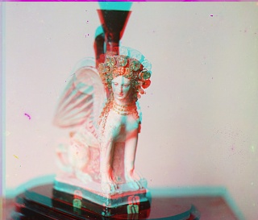
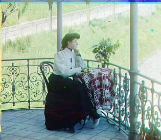
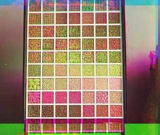
Failure Cases
The assignment allows one misaligned image out of the full set; two candidates showed up, both for the same underlying reason — the L2/NCC metrics compare raw pixel intensities, which assumes the three channels agree on what's bright and what's textured. That assumption breaks in specific ways.
beans.jpg — repeating texture
beans.jpg is a tight grid of near-identical fabric or bean
swatches — a strongly periodic pattern. L2/NCC search over raw
intensities can't tell the true alignment apart from one shifted by a
whole grid cell; several offsets score nearly as well as the correct
one, and the search latched onto the wrong one (visible above as heavy
magenta/green fringing across the whole image, not just at the edges).
Gradient- or edge-based features, or restricting the coarse search
window, would likely help here.
emir.tif — mismatched channel brightness
The assignment calls this plate out by name for a reason: the three exposures don't just differ in content, they differ in overall brightness and contrast, likely from uneven exposure times or plate degradation. L2 and NCC both implicitly assume corresponding pixels should have similar intensity once aligned — when that assumption fails, the metric's global minimum stops corresponding to the true geometric alignment, and the search confidently returns a wrong answer (here, a 215px horizontal red-channel shift, versus 24–49px for every other channel on this plate). A per-channel contrast/brightness normalization step before scoring, or switching to gradient-based features that are invariant to brightness offsets, would be the natural fix.